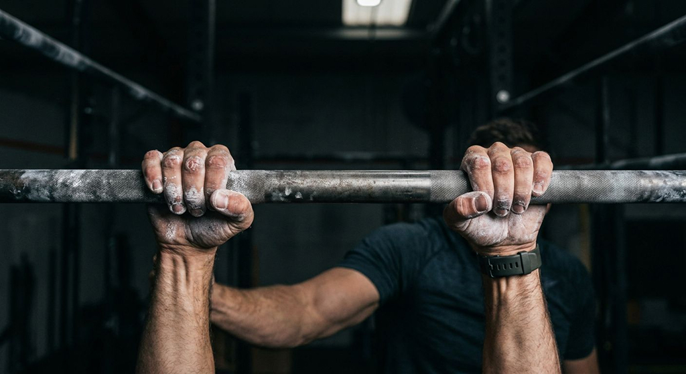
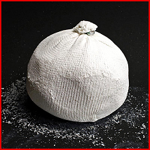
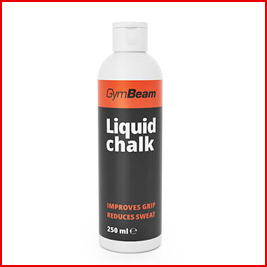
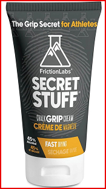

Soorten chalk
Er zijn veel soorten chalken, als je eentje voor jezelf wilt gaan halen raad ik an om te gaan zoeken welke soort chalk het beste bij je past, er zijn best wel wat soorten maar je zal snel achter komen welke bij jou het beste past.

Go to GearGrip is een van de belangrijkste dingen in freerunnen. Het is handig voor bijv hangen en klimmen. Er zijn veel manieren om je grip te verbeteren, maar op deze pagina vind je de meest gebruikte en beste chalk en andere soorten chalken die je kunt gaan gebruiken.

Er zijn veel soorten chalken, als je eentje voor jezelf wilt gaan halen raad ik an om te gaan zoeken welke soort chalk het beste bij je past, er zijn best wel wat soorten maar je zal snel achter komen welke bij jou het beste past.

Chalk is gebruikt om je meer grip te geven, dat is zo omdat je handen dan erdoor minder snel gaat zweten en als je gladde handjes hebt dan helpt het daar ook bij.

Het is belangrijk om goed grip te hebben, als je weet dat je iets gaat doen dat veel met klimmen of hangen of iets met grip te maken zal hebben, dan zal je iets nodig hebben om je grip te geven, want vaak al na een kwartier zijn je handen al helemaal aan het zweten of je voelt al dat je je grip verliest dan kom je zelf achten hoe lekker het is om chalk te hebben.